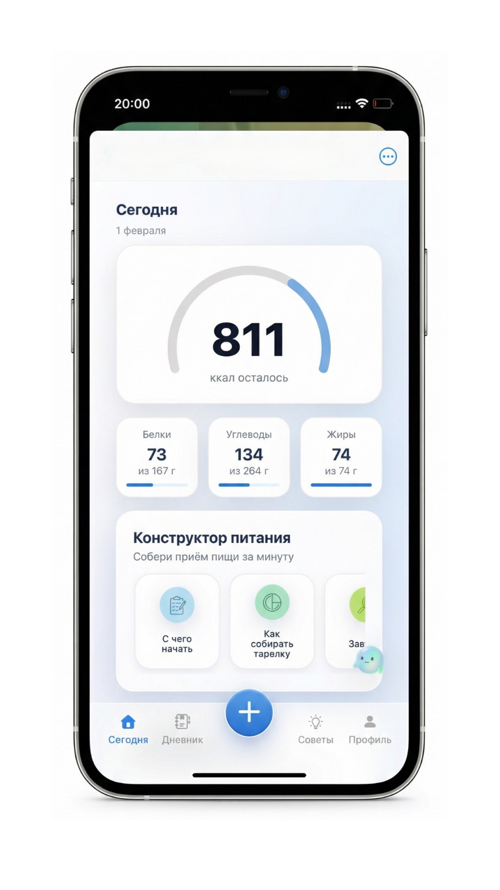
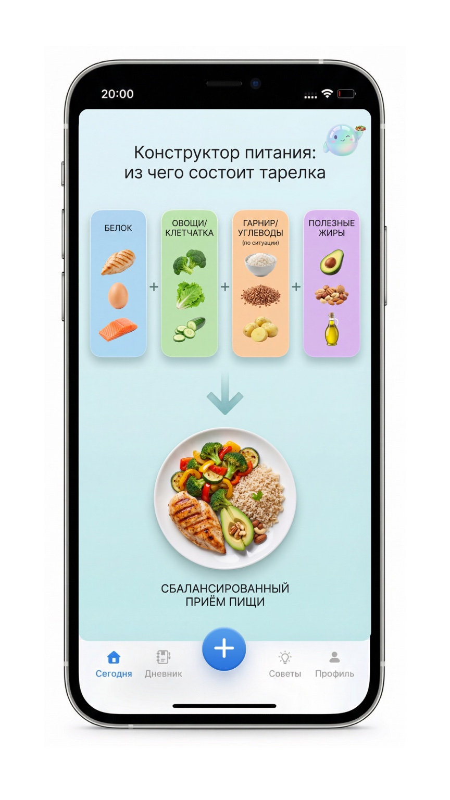
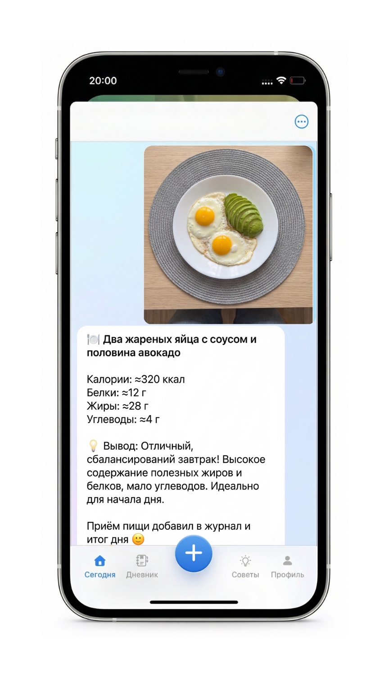

Пользователь отправляет фото блюда и получает разбор по калориям и БЖУ плюс небольшую подсказку, что можно улучшить. Всё автоматически записывается в дневник питания и итог дня.
В сервисе можно задавать вопросы по питанию и тренировкам: что съесть, как добрать белок, как упростить питание, что лучше выбрать дома, в кафе или на доставке.
Помогает собрать приём пищи из того, что есть дома, или понять, что заказать в кафе и на доставке. Не нужно искать «идеальные рецепты» — сервис работает с обычной жизнью.
Пользователь видит, сколько уже набрано и сколько осталось по калориям и БЖУ. Это помогает понять, что стоит добавить: белок, клетчатку, полезные жиры — без лишних подсчётов вручную.
Пользователь указывает цель, рост, вес и базовые данные. После этого Корти показывает дневной план под цель: сколько калорий и БЖУ нужно на день.
Вариант A: открыть конструктор и собрать один приём пищи из того, что есть дома или что хочется заказать.
Вариант B: отправить фото готовой еды и быстро понять, что это по калориям и БЖУ.
Вариант C: добавить приём пищи вручную, если данные уже известны или нужно быстро отметить перекус.
В итоге дня видно, что было добавлено, как это легло в план и чего не хватает. Если понравился вариант блюда или приёма пищи, его можно сохранить в избранное и повторять потом в один клик.

Суть не в специальных рецептах. Суть в том, чтобы собрать приём пищи из нормальных деталей: белок + овощи/клетчатка + по ситуации гарнир/углеводы + немного полезных жиров.
Не нужно готовить строго по инструкции. Можно выбирать из того, что есть дома, или из того, что доступно в кафе и доставке. На сборку уходит 1–2 минуты.
Если по дню чего-то не хватает, сервис это показывает. Видно остаток по КБЖУ и появляются простые подсказки: добавить белок, овощи, полезные жиры или остановиться, если уже достаточно.
Не нужно жить в режиме строгих запретов и бояться каждого продукта. Даже сладкое можно спокойно вписать в день, увидеть остаток по КБЖУ и не уходить в чувство вины.
Когда питание собирается по понятной схеме, его легче выдерживать. А значит, меньше хаоса, меньше качелей и выше шанс, что человек увидит реальный прогресс, а не только краткий всплеск мотивации.
Он не заменяет тренировки, консультации или работу тренера. Он добавляет то, чего часто не хватает между ними: понятную систему питания, фиксацию реальной картины дня и более стабильную вовлечённость человека в процесс.